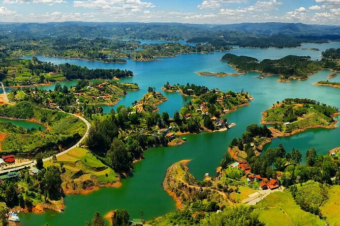
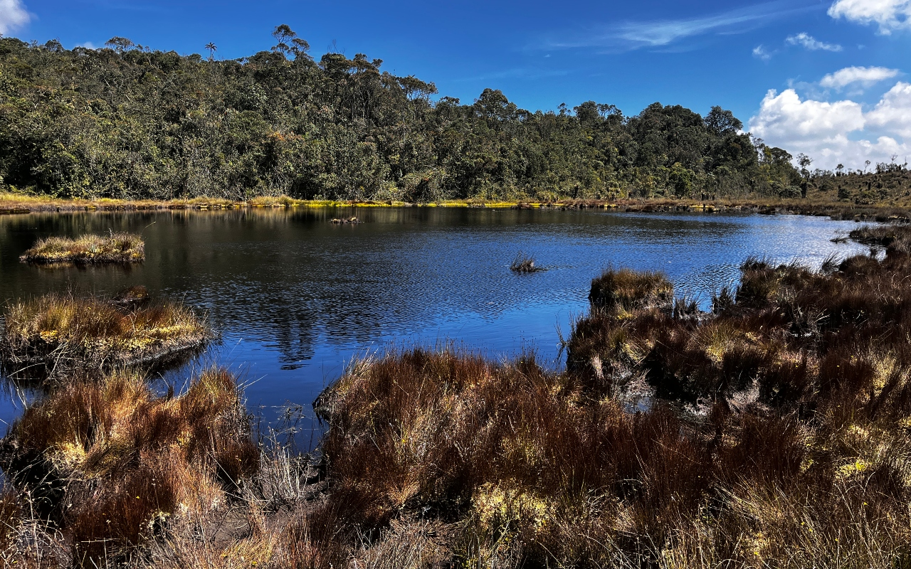
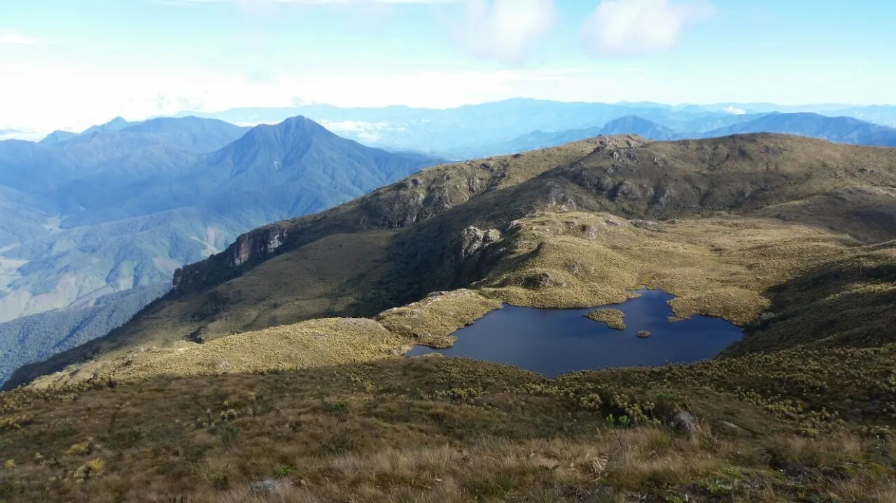
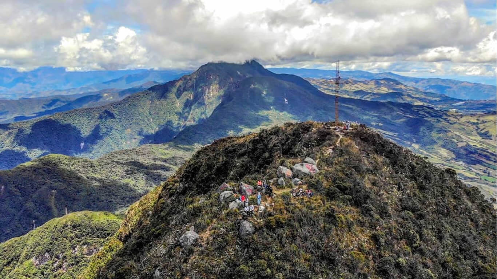
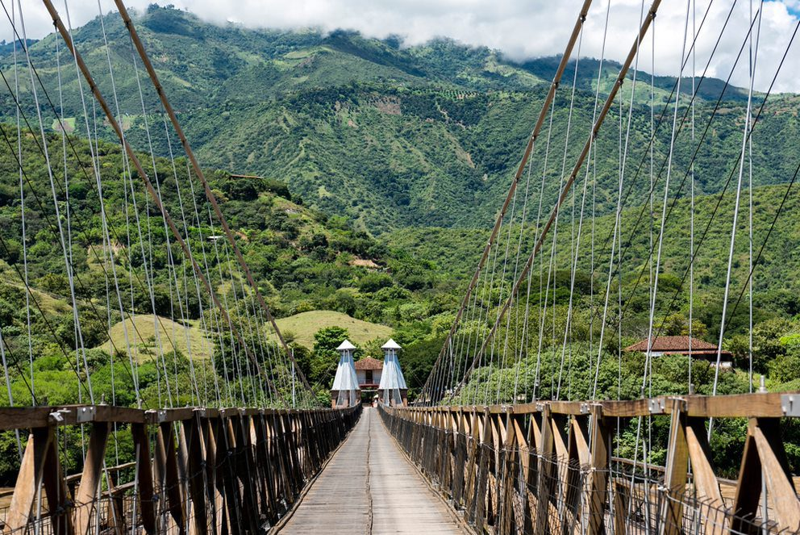
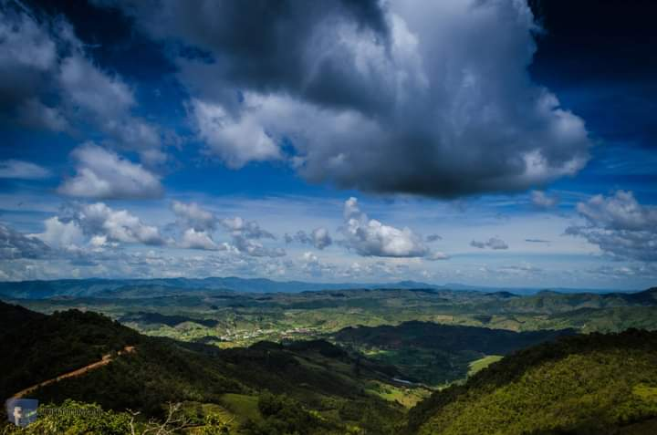
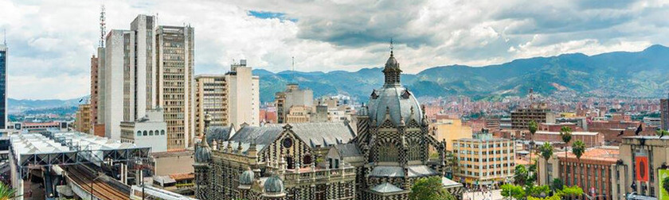
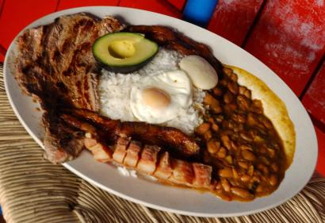
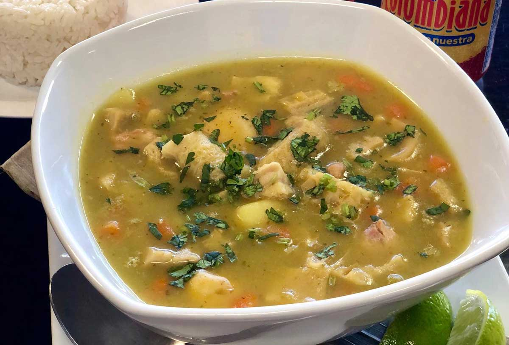
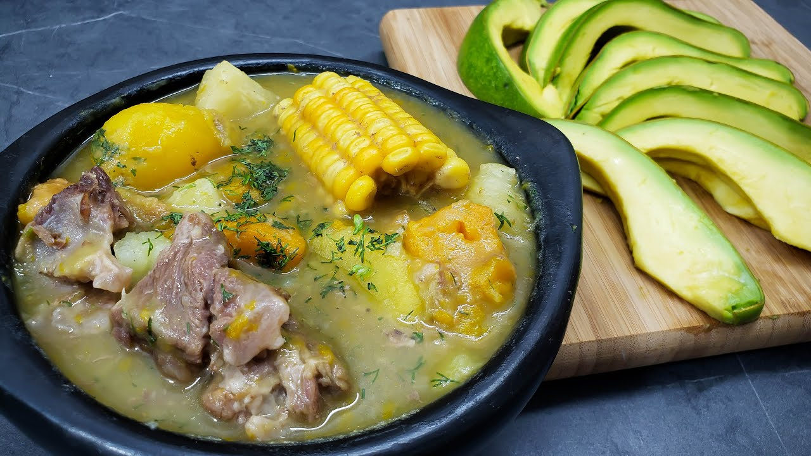

El departamento de Antioquia es una región llena de historia, cultura y paisajes impresionantes. A continuación, algunas de las principales rutas y lugares turísticos:
- Ruta de los Embalses (Oriente Antioqueño): Esta ruta lleva por paisajes de represas y pueblos pintorescos. Uno de los destinos destacados es Guatapé, por sus coloridos zócalos y la Piedra del Peñol, una formación rocosa que ofrece vistas panorámicas tras ascender sus 740 escalones.

- Ruta de los Páramos (Oriente Antioqueño): Ideal para los amantes de la naturaleza, esta ruta permite explorar ecosistemas de páramo, con flora y fauna únicas. Municipios como Sonsón y La Unión son puntos clave en este recorrido.

- Ruta del Occidente: Esta ruta lleva por tierras cálidas y montañosas, para visitar municipios como Santa Fe de Antioquia, una ciudad colonial con calles empedradas y arquitectura histórica. Además, el Puente de Occidente, una joya de la ingeniería del siglo XIX.

- Ruta del Norte: En esta ruta, puedes descubrir municipios como San Pedro de los Milagros y Entrerríos, conocidos por sus paisajes verdes y producción lechera.

- Medellín: La capital del departamento, conocida como la "Ciudad de la Eterna Primavera", ofrece una mezcla de modernidad y tradición.Cuenta con el Museo de Antioquia, el Jardín Botánico y la Comuna 13 para apreciar su transformación y arte urbano.

Comida Típica
La gastronomía antioqueña refleja la riqueza cultural y la tradición de su gente, ofreciendo una variedad de sabores que deleitan a locales y visitantes por igual. Ahora te enseño algunas de las comidas típicas más representativas del departamento de Antioqueño.
- Bandeja Paisa: Este es el plato más emblemático de la región. Consiste en una generosa porción de arroz, frijoles, carne molida, chicharrón, huevo frito, plátano maduro, chorizo, arepa y aguacate. Es una muestra de la abundancia y diversidad de la gastronomía antioqueña.
- Arepa Antioqueña: La arepa es un alimento básico en la dieta antioqueña. Se elabora con masa de maíz y se cocina a la parrilla o en sartén. Suele acompañar las comidas principales y puede servirse sola o con quesito antioqueño.
- Sancocho Antioqueño: Este caldo es una preparación tradicional que combina carnes (como pollo, res o cerdo) con tubérculos como yuca, papa, plátano y mazorca. Es un plato reconfortante y muy popular en reuniones familiares.
- Frijoles con Pezuña: Este plato combina frijoles rojos cocidos con pezuña de cerdo, ofreciendo una textura y sabor únicos. Es común acompañarlo con arroz, arepa y aguacate.
- Sopa de Mondongo: Una sopa espesa hecha a base de callos de res (mondongo), papa, zanahoria y otros vegetales. Es muy apreciada por su sabor y valor nutritivo.
- Chorizo Antioqueño: Este embutido de cerdo es famoso por su sabor especiado y jugoso. Se suele asar y servir con arepa y limón.
- Morcilla Antioqueña: Similar a la morcilla tradicional, pero con un toque dulce gracias al arroz y la sangre de cerdo. Es un acompañamiento común en parrilladas y platos típicos.
- Natilla Antioqueña: Un postre tradicional especialmente popular durante la época navideña. Se elabora con leche, panela y harina, resultando en una textura suave y dulce.

Sector económico Antioqueño
El departamento de Antioquia es una de las regiones más dinámicas y diversificadas económicamente en Colombia. A continuación, se destacan los principales sectores que impulsan su economía:
- Industria Manufacturera
- Comercio
- Agricultura y ganadería
- Servicios
- Exportaciones
En términos de Producto Interno Bruto >(PIB), Antioquia se posiciona como la segunda economía más grande de Colombia, después de Bogotá D.C. La diversificación de su economía y la capacidad de adaptación a nuevos mercados han sido fundamentales para su desarrollo sostenible.